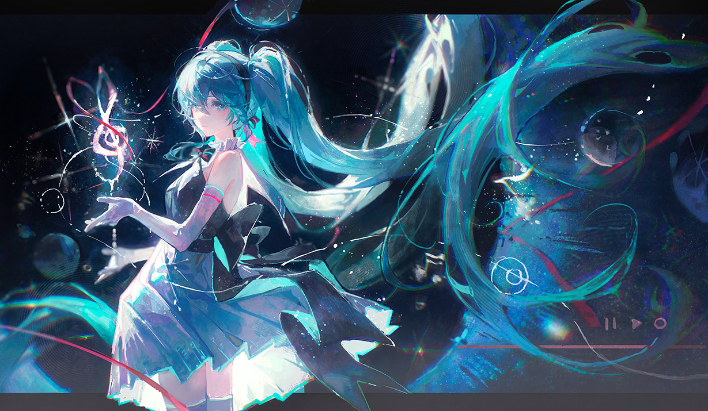
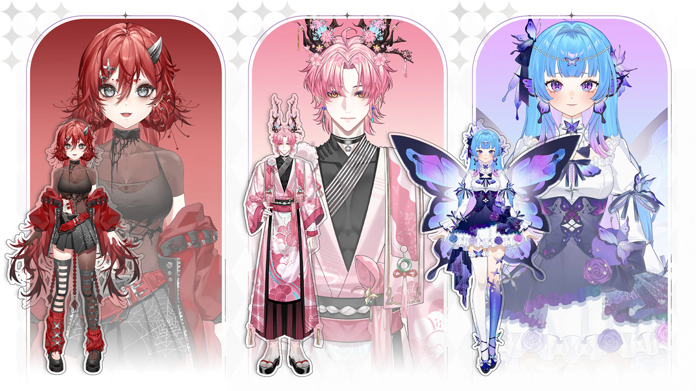
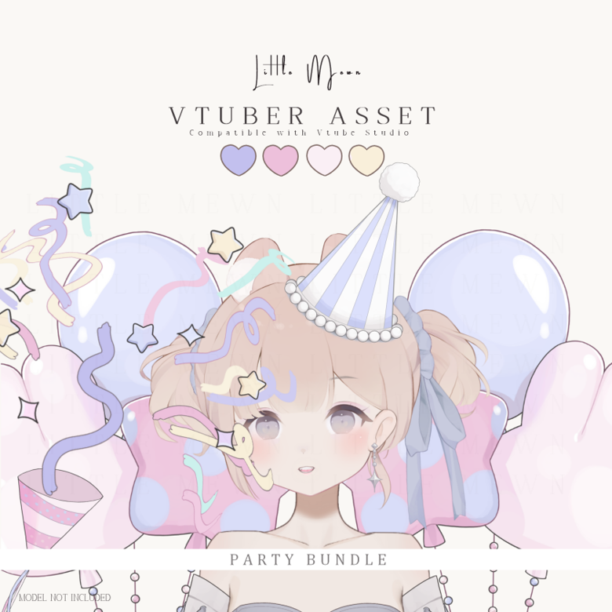

Image by Matcha. Source: @matchach on X

Image by Kyoki Studio. Source: @IamKyoki on X

Image by Chisa (Little Mewn). Source: @littlemewn on X
I learned that sometimes the go live page might need to refresh while coding to show the code works. I tried to make the images name as short as possible so it could be much easier to organize them. I learned that I need to type the full link with the http in front. Only the www is not working for the links. I failed at first even though the lecture video mentioned that the link needed to include the http in front of the link. I was just wondering what would happen if I don’t put the full link, just start with the www. I am not satisfied with the page in its current state because I think it looks ugly and not something that I actually wanted it to be. I would change the css to play around with the colors, text size and font, to make the page look more aesthetic. I have a few themes in my head currently: pink and white, black and red, blue and white or with another blue. I personally really like these colors to match together, the pink and white also the blue and white could be something cute, and the black and red could be something cool.